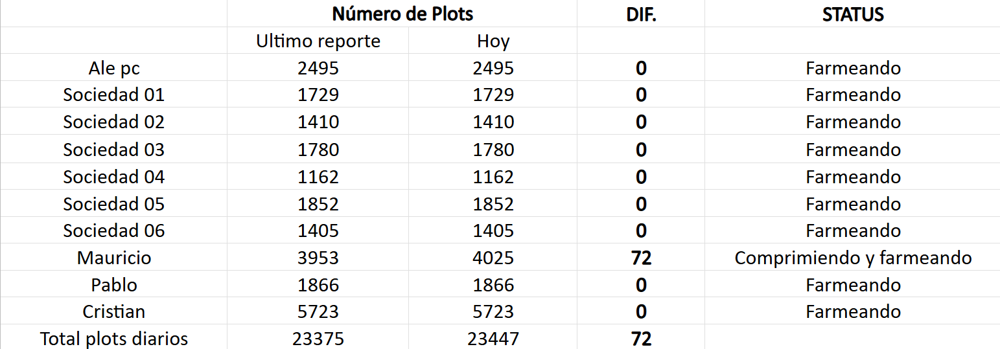

Cristank Via BTC


Ale Via BTC

Kaspa Cristank

Kaspa Cris & Cony

Chia Plotting
Total Chia: 181

Mi itinerario de hoy
Hoy me dedique a configurar los computadopres Chia para que enciendan una vez vuelva la luz después de un corte de luz, hasta ahora llevo 3 computadores Chia configurados.
He estado viendo un problema con dos ASIC de Ale que no me están minando, he reiniciado, he hecho limpiezas, he reseteado el internet y nada. Ahora voy a revisar el log de errores desde la ip de los ASIC.
Debido a malestares generales de cuerpo post entrenamientop, jaquecas y náuceas, he decidido descansar para retomar el aseo del Host el fin de semana, para dejar todo listo antes de irme. Haré reporte de igual manera para mostrar evidencia correspondiente.